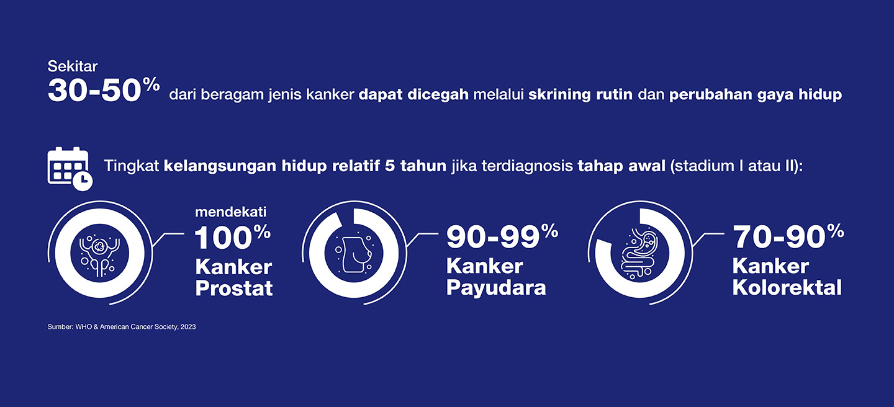

EBUS (Endobronchial Ultrasound)
Prosedur minimal invasif untuk deteksi kanker paru dengan akurasi hingga 95%.
Selengkapnya →
Menyediakan fasilitas lengkap untuk pengobatan berbagai jenis kanker, mulai dari skrining hingga prosedur lanjutan.
Prosedur minimal invasif untuk deteksi kanker paru dengan akurasi hingga 95%.
Selengkapnya →Menggunakan kamera endoskopi untuk membakar dan mematikan sel-sel kanker hati dan pankreas.
Selengkapnya →